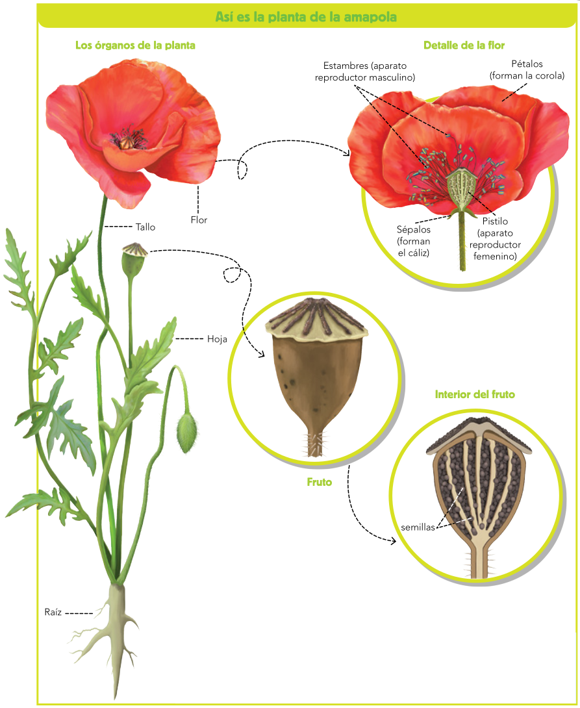

Las plantas son seres pluricelulares eucariotas cuyas células contienen cloroplastos y tienen una gruesa pared rígida. Tienen tejidos y, casi siempre, órganos. Su nutrición es autótrofa.
Aunque algunas plantas sencillas, como los musgos, no tienen órganos; la mayoría tiene raíz, tallo, hojas y muchas de ellas, además, flores (Figura ![[*]](crossref.png) ).
).
Figura:
Órganos de una planta y detalle de su flor
|

|
- La raíz. Fija la planta al terreno y absorbe agua y minerales...
- El tallo. Es el órgano que mantiene erguida a la planta y sostiene las hojas.
- Las hojas. Son los órganos especializados en realizar la fotosíntesis.
- Las flores. Son los órganos reproductores de algunas plantas. Las más comunes tienen estambres (órganos sexuales masculinos) y pistilo (órgano sexual femenino).
La mayoría de las plantas tienen vasos conductores, que son tubos que recorren el interior de la raíz, el tallo y las nerviaciones de las hojas, y por los cuales circulan agua y otras sustancias.
Clasificación
Además de la raíz, el tallo, las hojas y las flores, las plantas pueden tener frutos y semillas. Según esto, las plantas se clasifican en plantas sin semillas y plantas con semillas.
- Plantas sin semillas. Las plantas sin semillas suelen vivir en lugares muy húmedos. Entre ellas encontramos los musgos, que forman tejidos pero que carecen de raíz, tallo y vasos conductores. Y los helechos, que ya tienen tejidos y órganos.
- Plantas con semillas. Las plantas con semillas se clasifican, a su vez, en gimnospermas, cuyas semillas no están encerradas en un fruto, y angiospermas, cuyas semillas están en el interior de un fruto. Algunos ejemplos de gimnospermas son los pinos, los ginkos, las cicas, etc. Algunas angiospermas son el almendro, la retama, el roble, etc.
Funciones vitales de las plantas (Figura )
- Nutrición. Las plantas son autótrofas; es decir, fabrican sus propios nutrientes. Para llevarla a cabo:
- Absorben agua y minerales del suelo que, al mezclarse, forman la savia bruta que sube por el tallo hasta las hojas. Por las hojas entran y salen gases; así, absorben dióxido de carbono del aire.
- Realizan la fotosíntesis en las hojas. Para ello, las plantas utilizan la luz solar y fabrican hidratos de carbono (un tipo de nutriente) a partir del agua y del dióxido de carbono. Esos hidratos de carbono se mezclan con la savia bruta formando la savia elaborada, rica en nutrientes, que se distribuye por toda la planta. La fotosíntesis produce oxígeno como desecho.
- Respiran, tomando oxígeno y expulsando dióxido de carbono.
- Eliminan desechos de su actividad, expulsando de su cuerpo el oxígeno de la fotosíntesis; el dióxido de carbono de la respiración; el exceso de agua, en forma de vapor...
- Relación. Las plantas suelen vivir fijas al suelo y, aunque no se desplazan, crecen reaccionando ante la luz o a la gravedad. Detectan los cambios estacionales y algunas pueden moverse si se tocan.
- Reproducción. Las plantas tienen órganos reproductores para realizar la reproducción sexual. En la mayoría de ellas los órganos reproductores son las flores. También se pueden reproducir de forma asexual. Algunas lo hacen mediante esporas y, en otros casos, mediante la formación de estructuras especializadas (en las raíces, los tallos o las hojas) que se separan de la planta madre y originan nuevas plantas.
Figura:
Funciones vitales de las plantas
|
|
Las plantas y el ser humano.
Las plantas proporcionan numerosos beneficios al medio ambiente, al ser humano y al resto de seres vivos, por lo que debemos respetarlas y conservarlas.
- Gracias a la fotosíntesis las plantas producen grandes cantidades de oxígeno , que necesitamos los seres vivos. En este proceso también consumen dióxido de carbono , lo que hace que disminuya el exceso de este gas y, en consecuencia, reducen la contaminación de la atmósfera.
- Se emplean como alimento, tanto para el ser humano como para el ganado.
- Además, de la madera de las plantas obtenemos celulosa con la que se fabrica papel, corcho, látex, fibras textiles, pigmentos, etc.
- Protegen el suelo frente a la erosión gracias a que sus raíces forman una especie de malla. Además, fertilizan el suelo cuando los restos vegetales se descomponen por la acción de los organismos descomponedores.
- De ellas se obtienen medicamentos y otras sustancias empleadas en cosmética y perfumería.
- Forman entornos muy bellos y llenos de vida, como praderas, bosques, selvas... en los que habitan numerosos seres vivos de todos los reinos.